TOП-10
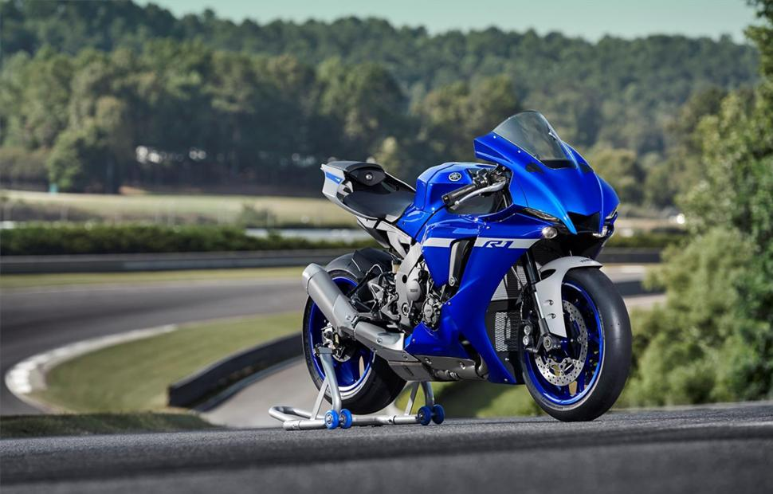
Покупка первого спортивного мотоцикла — это трепет, ликование и растерянность. Среди обилия производителей, не говоря о моделях и сериях, сложно сориентироваться и выбрать байк именно «под себя». Ведь важно выдержать баланс между неудержимым желанием взять нечто эффектное и одновременно услышать голос разума, напоминающий о безопасности и необходимости совершенствовать свои навыки. Топ-10 спортбайков для новичков поможет сделать выбор при покупке первого байка. Рейтинг составлен среди мотоциклов, объём двигателя которых не превышает 750 кубиков. Такая особенность обусловлена 2 факторами:
- Безопасность — прерогатива №1 при выборе мотоцикла для новичка. У таких байков относительно небольшой вес и компактная база, благодаря чему им проще управлять, класть его на бок на поворотах.
- Важно научиться выкручивать газ до предела. Редкий мотоциклист, оседлав на старте своей мотокарьеры агрегат с более чем 1000-кубовым двигателем, может научиться выкручивать рукоятку газа до упора.
-
Рейтинг спортивных мотоциклов для начинающих байкеров
Список представлен, начиная с 10 места. По мере ознакомления можно понять, почему моделям отданы разные строчки рейтинга. - На 10 месте спортбайк Kawasaki Ninja 250 серии EX250L. Для мотоцикла характерен 2-цилиндровый двигатель на 250 кубиков с инжекторным впрыском. Задняя шина чуть шире передней, что делает его легко управляемым. Вес байка — 172 кг. В бак можно залить 17 литров топлива. Максимальная скорость — 152 км. Характерная особенность — хорошая тяга на низких и средних скоростях. Из минусов — отсутствие системы ABS и нерегулируемая вилка. Это компактный мотоцикл на 32 лошадиных силы, который подойдёт негабаритным парням и девушкам. Из неоспоримых преимуществ — стоимость.
- 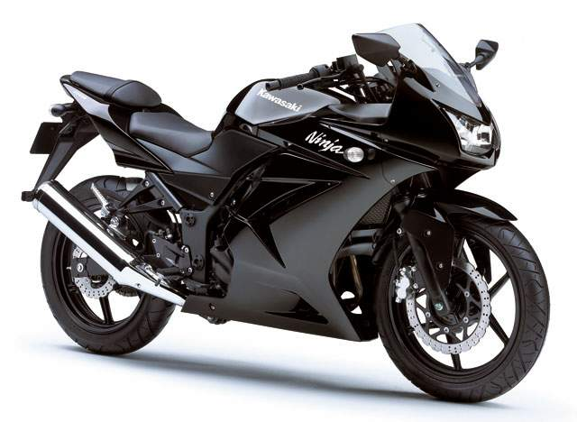
- На 9 позиции усовершенствованная версия Kawasaki Ninja 250 ABS. Мотоцикл занял более высокую строчку, чем тот же Kawasaki Ninja 250, но серии EX250L за счёт наличия антиблокировочнойсистемы, указанной в его маркировке. Эта особенность сделала его тяжелее на 2 кг — 174 кг. Также в обозначенной версии Ninja 250 более мягкий ход и меньше вибраций: результат изменений в настройке подвесок. Больше безопасности при тех же характеристиках, что и у предшественника Kawasaki Ninja 250 EX250L из 9 позиции позволило занять ему место повыше.
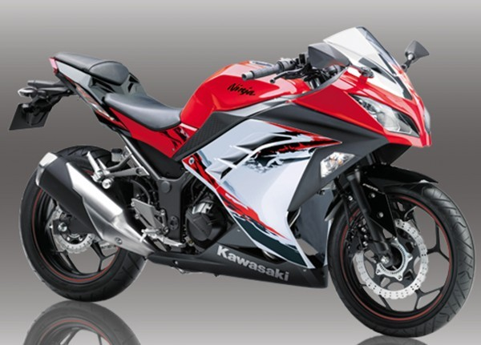
- На 8 месте находится Yamaha YZF-R25, презентованный в 2014 году. Его характеризуют почти 36 лошадиных сил и 249 кубовым мотором. Место в рейтинге обеспечено похвальным соотношением мощности и кубатуры двигателя. Для сравнения: в некоторых моделях с 300 «кубиками» лошадиных сил всего на 3 больше, чем у этого «малыша». Из нюансов — бак на 14 литров, что ограничивает водителя на дальних растояниях. Однако эту особенность компенсирует мягкая телескопическая вилка и маятниковая подвеска, которые смягчают рывки при торможении. Вес в 166 кг — это самое то, для совсем юных мотоциклистов: такой агрегат легче удержать и вырулить при заносах. Для высокоскоростных разгонов Yamaha YZF-R25 вряд ли подойдёт, а для манёвров на городских улицах и обгона легковых авто в пробках и на светофорах — запросто. Отдельная строка о дизайне: он в деталях повторяет «внешность» литровых и полутора литровых мотомашин, что позволяет его владельцу создать имидж солидного лихача.
- 7 место занимает Yamaha FZ6 Fazer. При 600-кубовом двигателе вес мотоцикла составляет 186 кг. Отчасти это обусловлено цельнолитой стальной рамой. Для него характерна отменная управляемость за счёт широкого руля и массивных шин. Внимание прохожих привлекает выразительный дизайн: передок байка напоминает летящую осу. Из минусов — отсутствие хода передней вилки, поэтому уличная езда предполагает хорошее дорожное покрытие. Система ABS есть только в европейских моделях, а в азиатских выпусках она отсутствует.
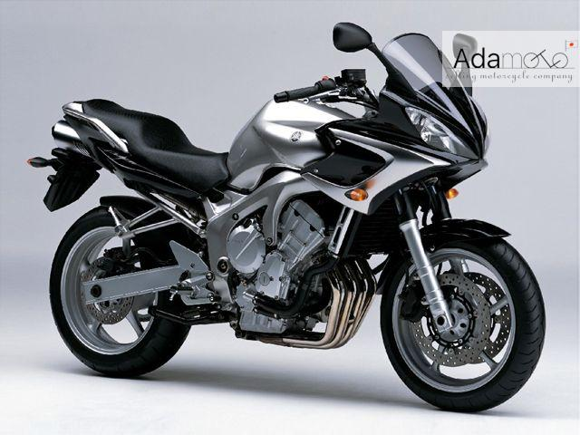
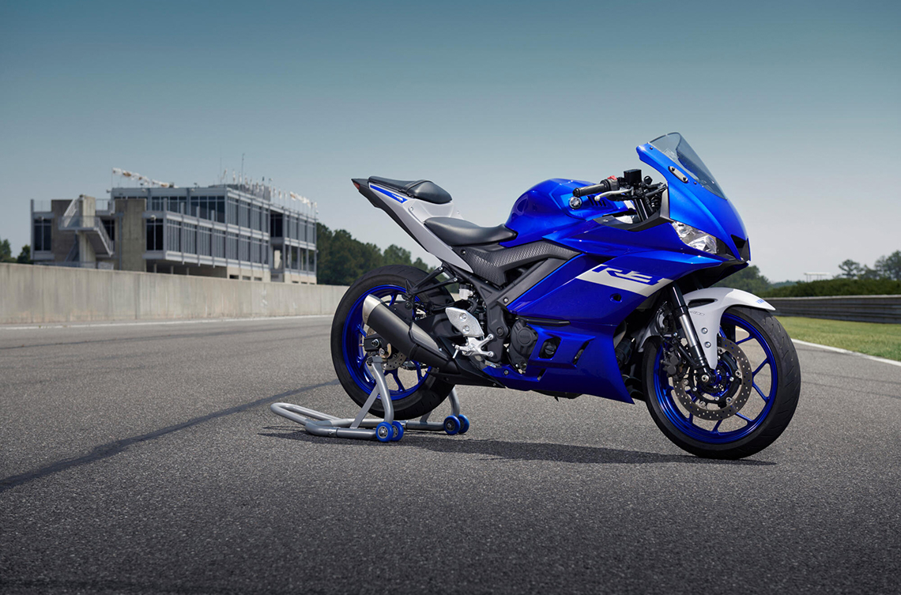
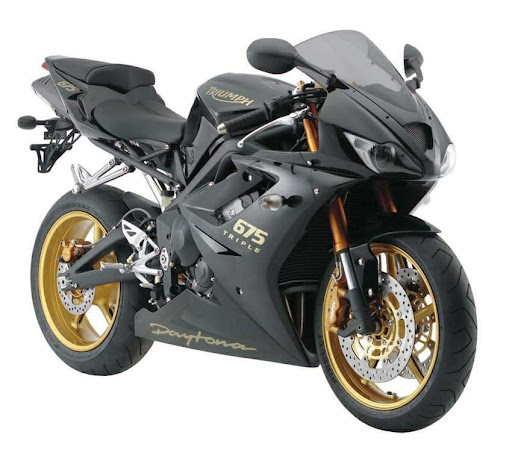
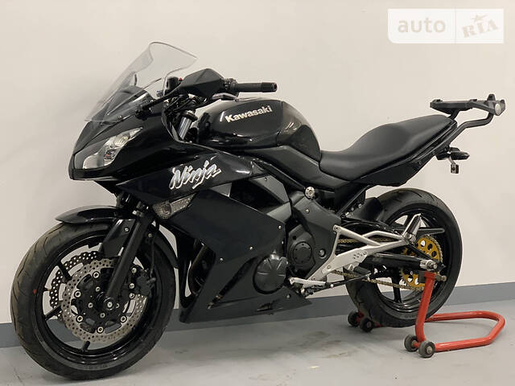
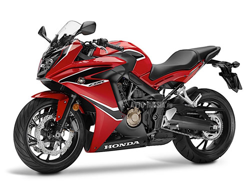
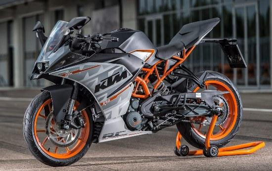
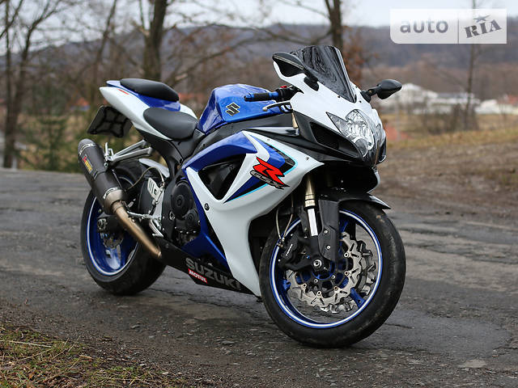
- 6 место занимает Yamaha YZF-R3 с 42 лошадиными силами, вмещёнными в 320 см3 двигателе. Вес мотоцикла — 169 кг: средний показатель среди моделей топа. Эта строчка отдана ему за его возможности на треке, ведь линейка спортивных байков создана специально для скоростной езды на специализированных площадках. Yamaha YZF-R3 идеально входит в повороты, что неоценимо для такого «малыша». Есть нюансы: угол наклона ограничивает подножка. Для начинающего гонщика это не помеха. Модель хороша для одиночной езды без пассажиров. Места сзади мало и трудно долго держать ноги на подножках из-за их узости. Такой мотоцикл стоит покупать тем байкерам, которые намерены совершенствовать навыки спортивного управления именно на треке, а на улицах придерживаться ограничений скорости. Им удивлять коллег по рулю именно на виражах. YamahaYZF-R3 не превзойдён в своей категории.
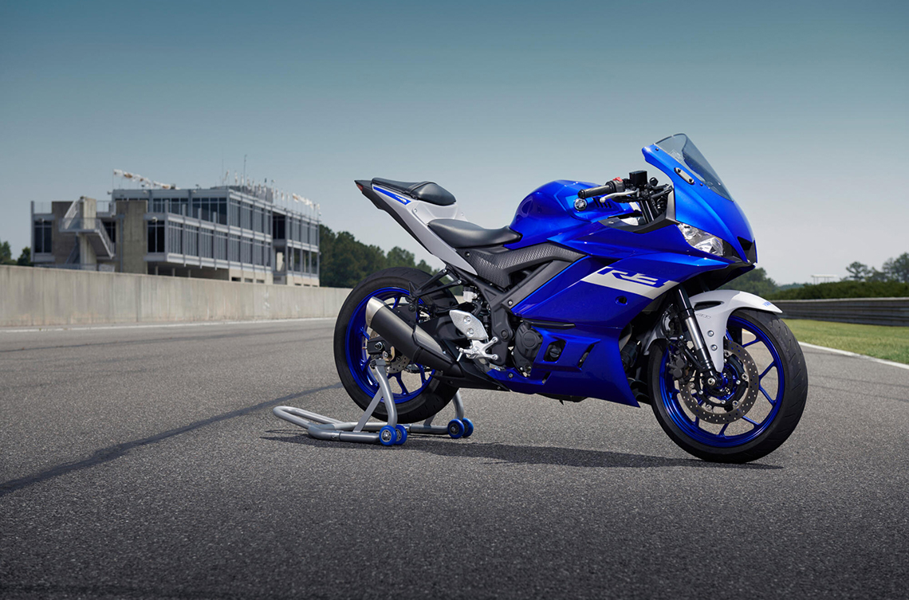
- 5 строчка отдана британскому байку Triumph DAYTONA 675. Среднее место в общем рейтинге обусловлено ранним выпуском модели — 2005 год. Более, чем 10-летний опыт его вождения показал, что это надёжный, быстрый мотоцикл. 125 лошадиных сил достаточно для того, чтобы ощутить мощь спортивной модели. Дизайн, смахивает на ретро, однако это не помеха тем мотоциклистам, которым «начинка» важнее «шкурки». Мощные тормоза, регулируемая гоночная подвеска и 4-тактныйдвигатель в 675 «кубиков» — то, чем восхищает «британец». Максимальный разгон достигает почти 250 км/час. Жаль, что мотоциклы из Великобритании не так распространены, как азиатские марки.
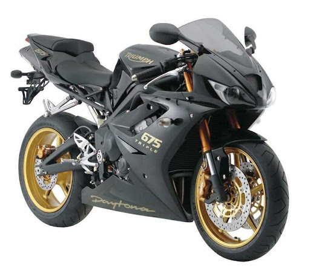
- На 4 месте — Kawasaki Ninja 400R. Почти 400 см3 и 44 лошадиных силы — то оптимальное соотношение параметров, подходящее для начинающих и одновременно осторожных мотоциклистов. Kawasaki Ninja 400R занял более высокую строчку рейтинга, чем байки с большей мощностью за счёт цифрового зажигания и наличия ABS-системы торможения. Для него характерен просто обалденный спортивный дизайн: не оборачиваться на проезжающий Kawasaki Ninja 400R невозможно. Занять строчку выше помешала масса, достигающая 200 кг.
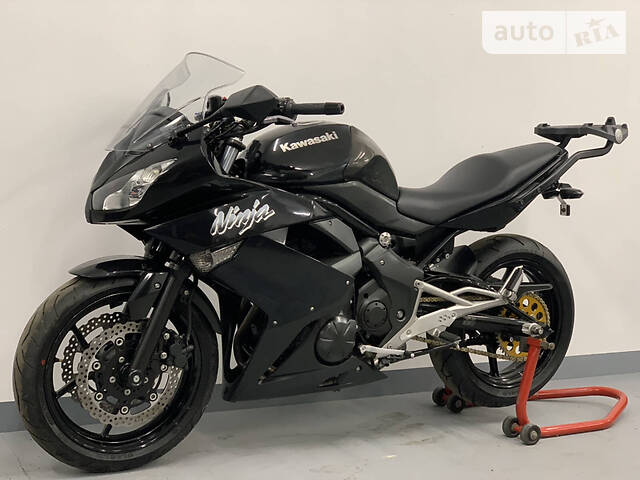
- 3 позиция рейтинга спортивных байков для новичков отдана «японцу» — Honda CBR650F. Японцы выпустили первый экземпляр в 2014 году. 650 кубовый двигатель — отличный вариант, как для начинающего, так и для опытного мотоциклиста. Первый сможет научиться выжимать газ на площадке, а второй — применять свои навыки на трассе. Плавный набор мощности и АВS – то, что нужно новичкам и позволяет кайфовать опытным байкерам. Ровный, линейный набор скорости — результат двухстороннего подключения тока к клапанам. Такая особенность делает его практически безотказным механизмом в плане обратной связи с передним колесом. Радует относительно невысокая стоимость мотобайка — результат сборки на таиландских заводах.
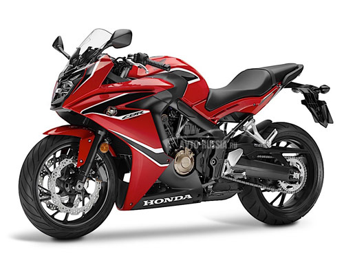
- №2 в топе — малокубатурный спортбайк KTM RC390. Компактная модель со спортивными характеристиками, которая стала отличным вариантом для молодёжи. Масса в 147 кг и высокая манёвренность мотоцикла позволяют рассекать шоссейную гладь на мототреков в выходные дни и ловко лавировать в пробках будничных мегаполисов. Посадка здесь на любителя: низкий наклон водителя и наличие «горбатого разделителя» между сидениями водителя и пассажира. Для длительной езды такая поза вряд ли подойдёт, а вот для эффектного появления в городском потоке — это да. Антиблокировочная система тормозов позволит удержать байк в случае дорожного форс-мажора, что так необходимо начинающим байкерам. Одновременно с этим конструкция KTM RC390 предполагает усовершенствование навыков в течении нескольких лет. Например, узкое переднее колесо с цепким покрытием шин Metzeler Sportec M5 — это возможность научиться пилотивать байк, наклоняя его практически до самой подножки.
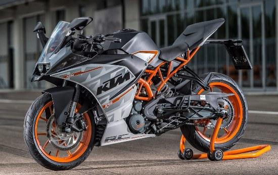
- Первая позиция рейтинга — Suzuki GSX-R 600. В народе его называют Джиксером из-за аббревиатуры модели. 600 «кубиков» позволяют разогнаться до 100 км/час за 3 секунды, а его максимальная скорость — 250 км/час. Мотоцикл выпускается, начиная с 1997 года и до 2011+. Вес — 187 кг, но отменная тормозная система с 4-поршневым суппортом на переднем колесе и 2-поршневым на заднем делают торможение быстрым, плавным. Сочетание агрессивного дизайна, отменной управляемости и безотказной работы вывели его на первую строчку топа.
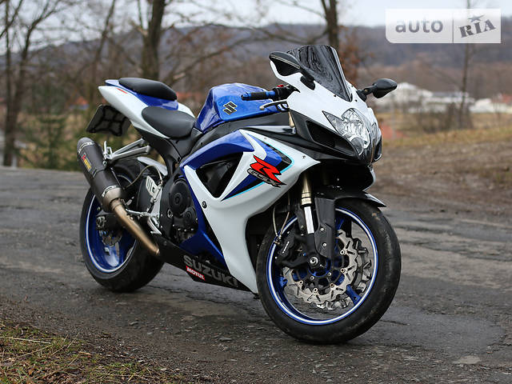